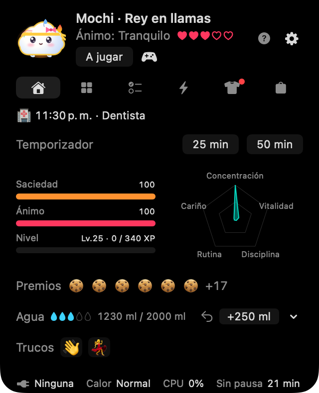
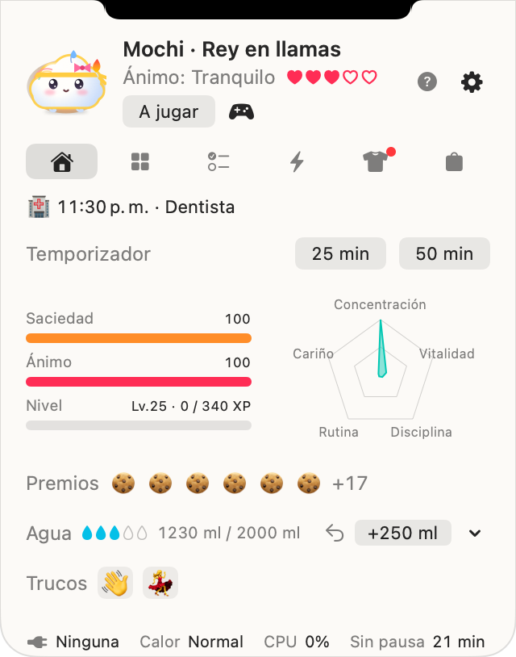
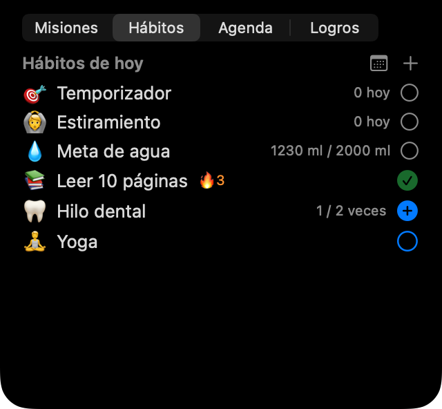

Toc, toc, ¡soy Noki!
Un amiguito suave que vive junto al notch de tu MacBook. Mientras trabajas, te recuerda beber agua, estirarte, descansar de verdad y cumplir los planes del día. Si te cuidas, sale del huevo y crece contigo.


Cinco amigos, todos gratis
☁️ Mongsil
una nube bebéSu humor es el tiempo: llovizna si tiene hambre, sol cuando cumples la meta de agua del día.
🧶 Boksle
una bola de peloSe tumba boca abajo mientras carga; levanta las orejas cuando se acerca el puntero.
🍮 Tangtang
un flanSe derrite chorreando caramelo cuando el Mac se calienta; se menea feliz mientras carga.
🌱 Kongkong
una judía con broteBrilla cuando cumples la meta de agua; su hoja se dobla cuando tiene sueño.
🌙 Mallo
un malvavisco conejo lunarA partir de las 9 de la noche brilla la luna de su frente.
Amigos de temporada
Con Noki Plus conoces a un amigo especial en cada temporada, y se queda contigo cuando pasa la temporada y cuando termina Plus: Eunhaeng (un mochi de ginkgo) y Danpung (una hoja de arce) en otoño, Noonsongi (una bola de nieve esponjosa) y Hoppang (un bollo al vapor con bufanda) en invierno.


Respira con tu Mac
Noki reacciona a la batería, la carga, el calor, la actividad del teclado y el ratón y al reposo de la pantalla, todo leído en tu Mac. Su cara muestra trece emociones y, si lo activas, se pone paraguas o bufanda según el tiempo de fuera.
Cuida tu día
💧 Agua y estiramientos
Registra un vaso con un clic, guarda tus propios vasos y añade lo que bebiste lejos del Mac. Avisos suaves para estirarte tras mucho rato sentado y temporizadores de 25 o 50 minutos.
🌱 Hábitos y planes
Tus hábitos por veces o por tiempo, un calendario mensual de hábitos, planes sencillos con avisos y, si lo conectas, el Calendario del Mac.
🏆 Misiones y logros
Tres misiones diarias, 35 logros y retos semanales y mensuales, con golosinas para comprar ropa.
🎾 Juegos
Acarícialo, lánzale una pelota en la pantalla, juega a tres minijuegos o enfréntate a un amigo intercambiando códigos.



Ligera, y solo en tu Mac
Su respiración no redibuja nada, así que en reposo usa casi un 0 % de CPU y descansa cuando la pantalla duerme. Tu mascota y tus registros se quedan en tu Mac: sin cuenta y sin servidor. Consulta la política de privacidad.
Muy pronto
Estamos puliendo Mochi Noki con amigos. Lo anunciaremos aquí y en Novedades cuando esté en la Mac App Store.
- Mac con chip de Apple (M1 o posterior), macOS 14 Sonoma o posterior
- En un Mac sin notch o en una pantalla externa aparece un notch virtual arriba en el centro. También puedes usar un icono en la barra de menús.
- Los cinco amigos y las funciones principales son gratis. Noki Plus (opcional) añade hábitos ilimitados, la carta mensual de Noki y amigos de temporada.

Pasa un día con Noki
y cuéntanos qué amigo te gusta más 💌
Todos los dibujos están hechos con el código de dibujo de la propia app.